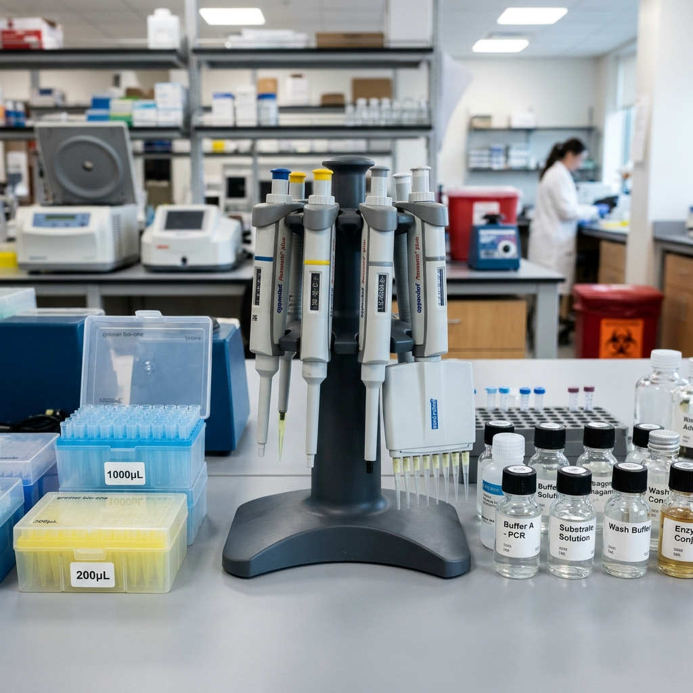

Pre-Analytical Standard 01Color-Coded Vacutainer Tubes
Every blood draw strictly follows CLSI H3-A6 order-of-draw protocols using Lavender K2-EDTA tubes for hematology, Gold SST gel tubes for biochemistry, Grey Fluoride tubes for glucose, and Light-Blue Citrate tubes for coagulation.
Exact Blood-to-Additive Ratio
Zero Cross-Contamination